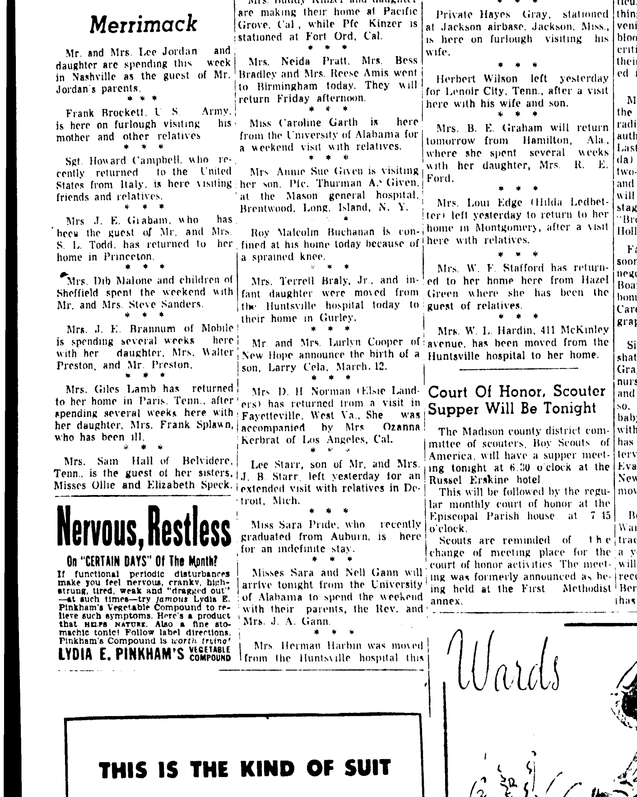

Ozanna L'Herreaux Kerbrat b. 1896
Great-grandmother of Shayla Nadah Alamdari, wife of Peter.
Ozanna L'Herreaux Kerbrat was born on 3 May 1896 (according to the family's 2015 tree)1.
Family
- Partner
- François Kerbrat b. 1881
- Children
- Yves John Kerbrat 1924–1986 documented
- Adrien F. Kerbrat 1926–2000 documented
Life events
| Event | Date | Place and details |
|---|---|---|
| Born | 3 May 1896 | According to the family's 2015 tree1 |
| Lived | 16 Mar 1944 | Los Angeles, California, United States2 |
Records


Sources
- Peter's tree, danenberg.sql, 2007–2015, personae 178, birth.
- Personal Mention, The Huntsville Times (Huntsville, Alabama), 16 March 1944, p. 6.
Mrv D. H Norman 'Elsie Landers' has returned from a visit in j Fayetteville. West Va„ She was I ! accompanied by Mrs Ozanna | Kerbrat of Los Angeles, Cal.
Translation: Mrs. D. H. Norman (Elsie Landers) has returned from a visit in Fayetteville, West Va. She was accompanied by Mrs. Ozanna Kerbrat of Los Angeles, Cal.
Residing in Los Angeles, California; accompanied Mrs. D. H. Norman (Elsie Landers) on a visit to Fayetteville, West Virginia, and Huntsville, Alabama.